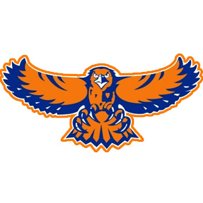
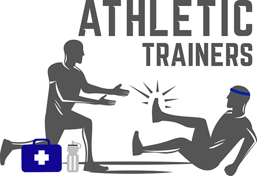

Home
Academics
Interests
Mini Projects
Calculator
MadLibs
Quiz
Hoffman Estates Quiz!
Question 1: Which of the following is NOT true?
Hoffman Estates High School has a urban dictionary entry
Hoffman Estates High School Varsity Girls Basketball lost to Conant(Nov 30th, 2018)

Hoffman Estates' Mascot (hawk) is named Hercules
The Cheesecake fundraiser was only for band students
Question 2: Which of the following SPRING sports? Select All that apply
Girls Tennis
Waterpolo (both boys and girls)
Math Team
Girls Lacrosse
Baseball
Question 3: What was the first year that Hoffman Estates had Seniors and Juniors?
Question 4: Which of the following is the nickname for the athletic training center (according to the HEHS website)?

"Hawks Rehab Center"
"The Nest of the Recovering Hawks"
"The Home of the Wounded Hawks"
...its just the athletic trainers
Question 5: Select All that are true.
there are 15 Academics Department
There are only 3 languages offered in HEHS (4 years)
Freshman ( in order to qualify for Harper's Promise) need 5 service opportunities ( in a year)
The Motto of HEHS is"Promoting excellence through knowledge, confidence, and achievement"
EYAS stands for Education-Young-Athletic-Studies
Question 6: How many AP classes are in HEHS?
CHECK YOUR ANSWERS HERE